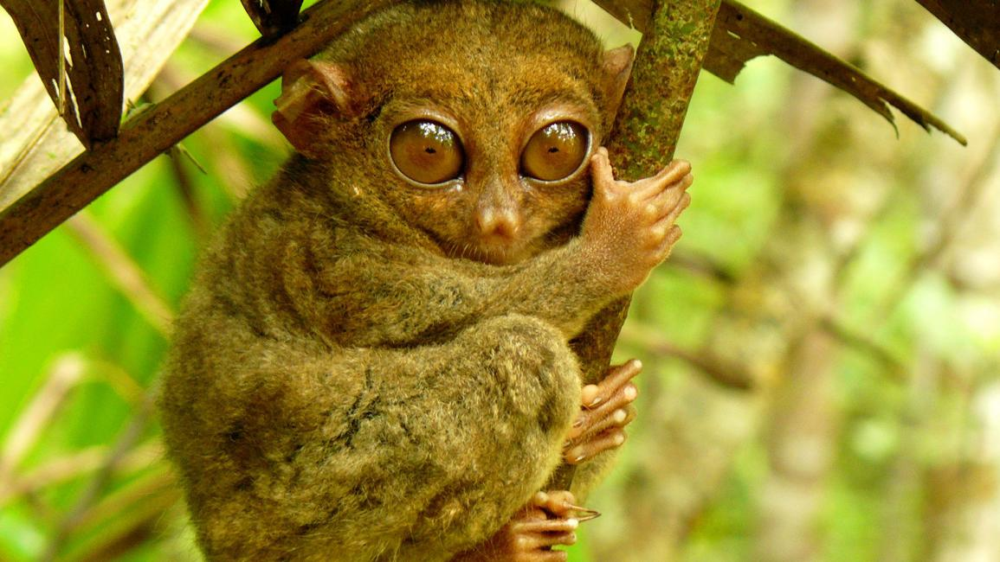
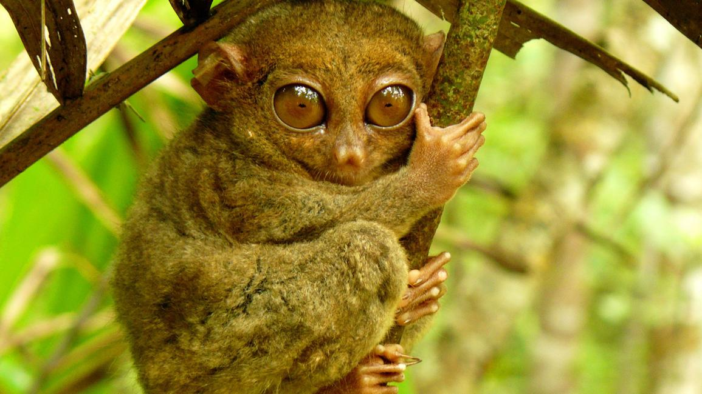

About Bohol
Bohol terrain is rolling Hills.
The islands interior is generally flat but dotted with numerous haycock-shaped hills popularly know as the Chocolate Hills. The southern part is basically mountainous, with deep gullies and gorges that slope abruptly to the sea. The northern section has alluvial valleys and low-lying hills.
The coastline, except in the north is characterized by woodlands, grass, and dense swamplands. 75 small islands can be found off the mainland, with Panglao considered as the largest. The climate varies in different areas warm and dry along the coast; cold and humid in the interior. Rainfall, however, is evenly distributed.
A Brief History
Created on March 10, 1917, Bohol derives its name from the early village of Bool, near what is now Tagbilaran. The island came under Spanish rule in 1565. Two major rebellions against the Spaniards happened in this province: the Tamblot revolt in 1621 and the Dagohoy revolt, which happened from 1744 to 1829 and is considered the longest revolt in Philippine history. The province is also known as the home province of Carlos P. Garcia, the fourth President of the Philippines.
The People
Boholanos are known to be good traders and often referred to as the “Ilocanos of the South”. This is because of their frugality and being industrious. The majority of the people speak the Cebuano dialect and English.
Commerce and Industry
Agriculture is the main industry in the province. Products mostly-generated are rice, coconut, and corn. Fishing can be found in the northern towns, particularly those beside the Camotes Sea. Among the minerals the province produces are manganese, iron, and tin. Bohol handicrafts are famous throughout the country. These include baskets, items woven with saguran fibers, abaca mats and slippers, the buntal hats of Talibon, and spellcraft. These crafts are sold in souvenir shops all over the country.
 
